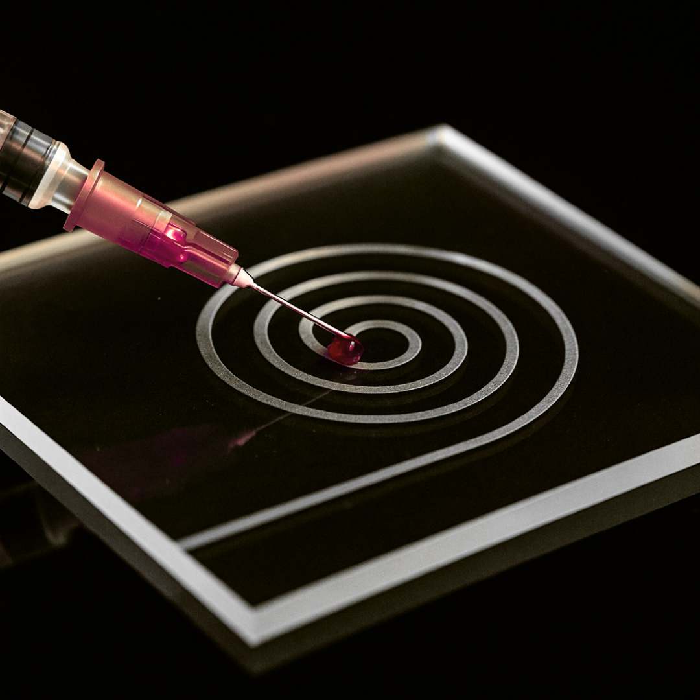

Lab-on-a-Chip Capstone Project
Designed a compact, user-friendly microfluidic chip that efficiently separates and isolates circulating tumor cells (CTCs) from blood by size for early cancer and disease screening, using microfluidic forces in a spiral channel.

Project Overview
For my capstone in Mechanical Engineering, my team developed a spiral microfluidic Lab-on-a-Chip (LOC) device designed to isolate larger abnormal cells (e.g., circulating tumor cells) from a blood sample.
The device leverages inertial microfluids, specifically Dean and lift forces within curved microchannels, to enable size-based cell separation in a compact, cost-effective chip. The goal was to create an accessible diagnostic tool to support earlier disease detection, reduce reliance on complex imaging systems, and alleviate stress on the healthcare system.
The Problem
In regions with long diagnostic wait times, delayed cancer detection leads to late-stage diagnoses and significantly reduced survival rates. Traditional detection methods are expensive, equipment-heavy, and require specialized operators.
There is a critical need for a simpler, faster, and more accessible point-of-care screening tool capable of isolating rare abnormal cells from blood samples in a reliable and scalable way.
My Contributions
- Conducted an in-depth literature review on inertial microfluids, CTC isolation techniques, and blood rheology to inform design decisions and validate modeling assumptions
- Led analytical modeling of Dean drag and shear-induced lift forces to predict particle migration within a spiral microchannel
- Developed MATLAB simulations to evaluate force dominance across multiple particle sizes (10 µm, 22 µm, 40 µm) and flow conditions
- Performed iterative design optimization of channel width, height, curvature radius, and loop count to meet size, manufacturability, and laminar flow constraints
- Contributed to fabrication of a PDMS prototype using 3D-printed molds and soft lithography techniques
- Evaluated separation performance using lift–Dean force ratio analysis and position-based modeling
Final Outcome / Impact
The final design demonstrated analytical separation of large and small particles within a 4 cm × 4 cm chip constraint.
- Particles larger than the threshold were consistently dominated by lift forces and migrated toward the inner wall
- Particles smaller than the threshold were dominated by Dean forces and directed toward the outer wall
- The design maintained laminar flow and effective separation across relevant blood viscosity ranges
This project demonstrated how microfluidic design, fluid mechanics, and iterative engineering optimization can be used to create a compact, potentially scalable diagnostic platform.
Key Skills Applied
- Microfluidics & inertial flow analysis
- Fluid Mechanics (Reynolds number, Dean number, shear-induced lift modeling)
- Engineering research & literature synthesis
- MATLAB simulation & analytical modeling
- Design validation through comparison to published studies
- Engineering design iteration & trade-off analysis
- PDMS fabrication & rapid prototyping
- Design under constraints (cost, manufacturability, clinical usability)